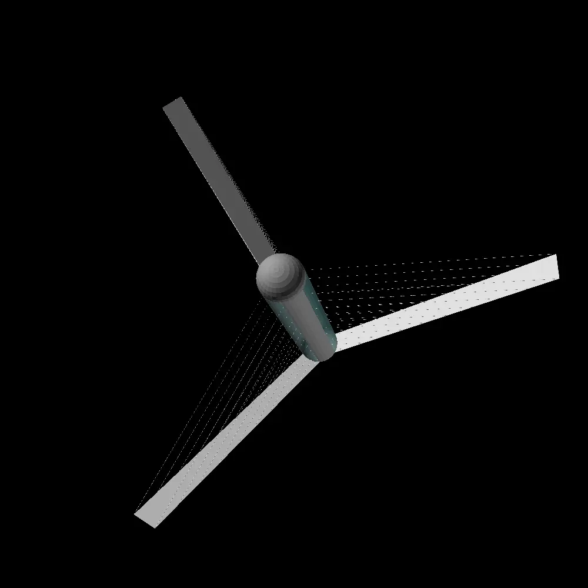
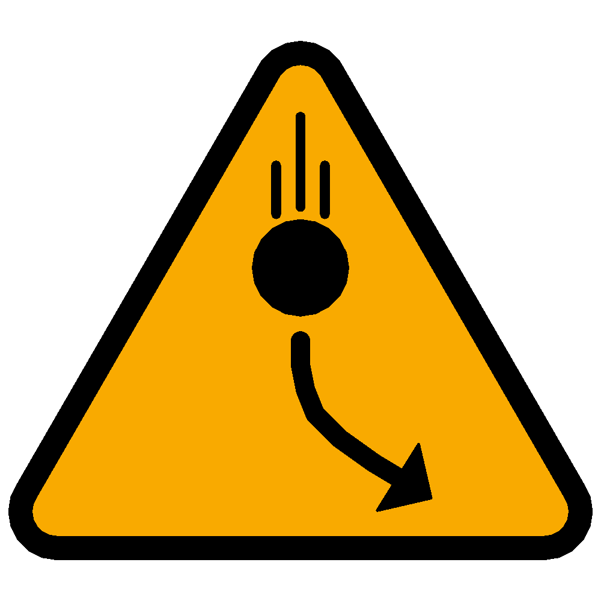

| summary habitat data table | |
|---|---|
| Habitat radius | - |
| Habitat length | - |
| Aerial density | - |
| Habitat mass | - |
| Internal volume | - |
| Hull thickness | - |
| Provided centrifugal gravity | - |
| Internal atmospheric pressure | - |
| Provided living area | - |
| Time to complete a rotation | - |
| Safety factor | - |
